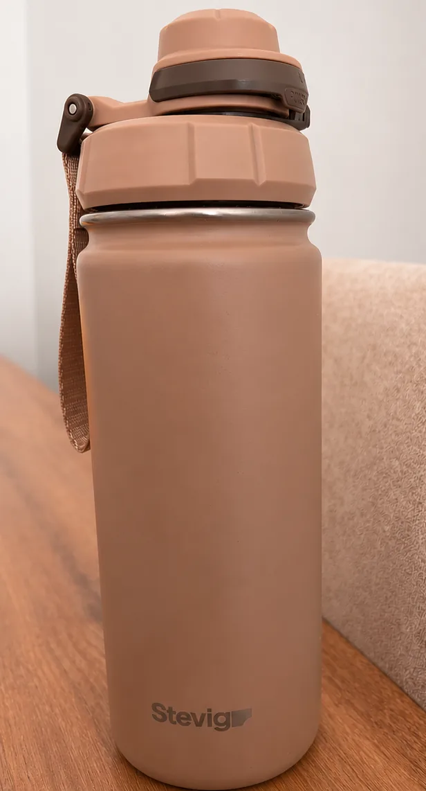
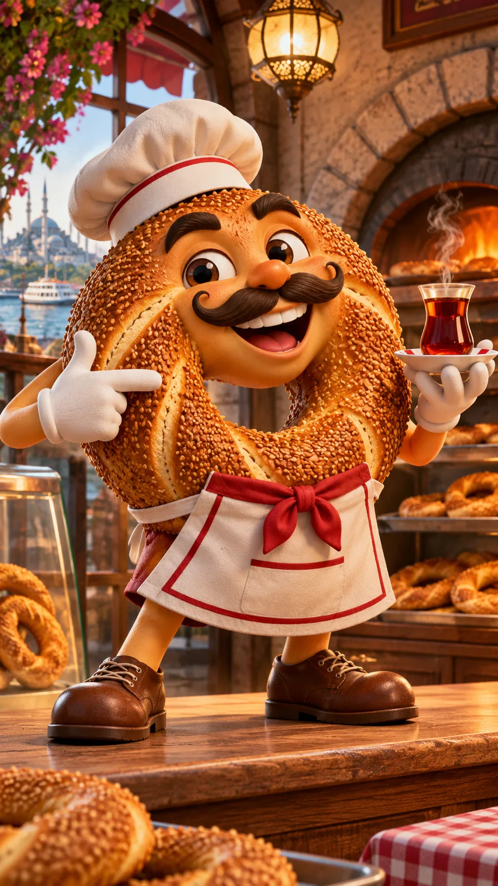
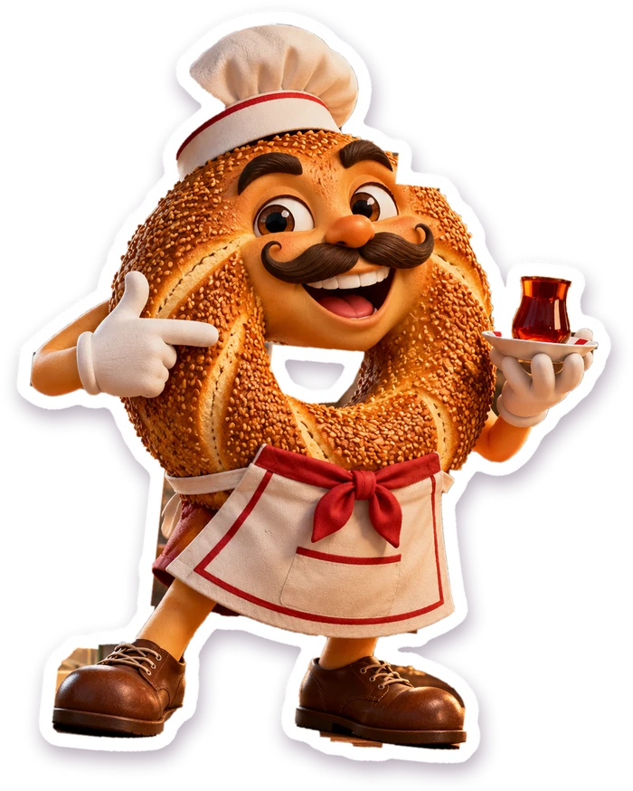

Fikirden görsele
Yapay zekâ ile üretilmiş ürün görselleri, reklam filmleri ve maskotlar. Stüdyo, ekip ve uzun çekim günleri olmadan.


Telefondan kampanyaya
Loş ev ışığında telefonla çekilmiş tek bir fotoğraf. Aynı ürün; yapay zekâ ile kurulan stüdyo ışığı ve sahneyle kampanya görseline dönüştü.
Çizgiyi kaydırarak farkı görün.
Ruffles Ketçap
Beş ürün görselinden; uçuşan cipsler, müzik ve ses efektleriyle 15 saniyelik dikey Reels reklam filmi.



Simit Usta
Bir fırın markasına ses ve karakter kazandıran, İstanbul'un en güler yüzlü ustası. Tek bir karakter; reklamdan ambalaja, sticker'dan tabelaya markanın her yerinde.
“Simit sıcak, çay demli!”
Bu sayfadaki tüm çalışmalar konsept çalışmadır; adı geçen markalarla resmî bir iş birliği bulunmamaktadır. Marka adları ve logolar sahiplerine aittir.